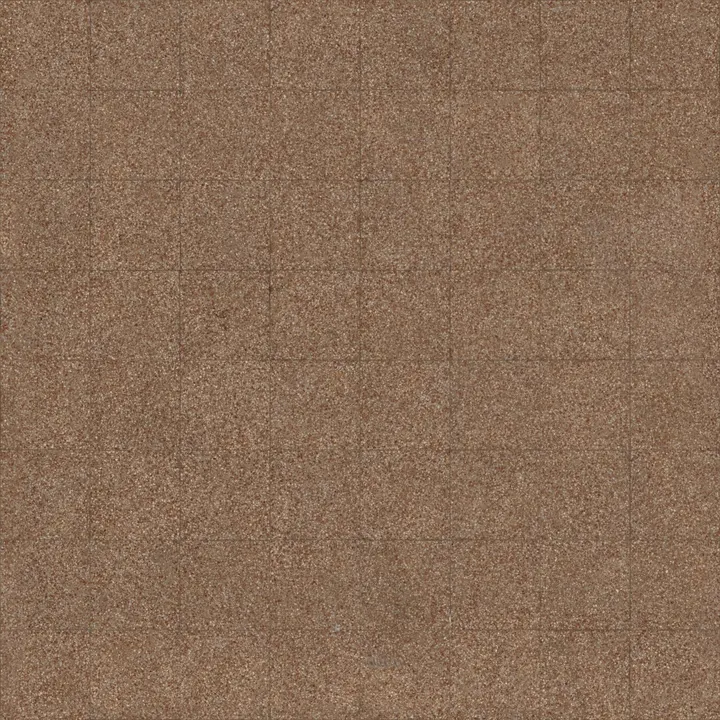

What does it solve?
Understand the use case, the users and whether the product makes a meaningful difference to a workplace.
BAMBU / RESEARCH & SPECIFICATION
An open studio for better products / Est. 2026Products worth questioning. Materials worth understanding. Ideas worth sharing.
Suggest a productA more considered specification / 001
Good ideas don't always arrive through familiar catalogues. Materials Lab is where we explore finishes, systems and workplace technology that deserve a closer look.
For architects, interior designers, specifiers, engineers, manufacturers and curious clients: a place to share products and examine the evidence behind them. We look beyond appearance to performance, installation, maintenance and the realities of commercial projects.
Studies are editorial evaluations, not product certifications or automatic approvals for use on a project.
Understand the use case, the users and whether the product makes a meaningful difference to a workplace.
Examine relevant testing, product declarations, certification, limitations and evidence still to be verified.
Consider procurement, compatibility, access, repair, maintenance and whole-life implications.
Inside the lab / in review
The first editorial studies are being prepared and technically reviewed. They will be published when their sources and conclusions have been checked.

Materials Lab / 001
DALI-2, wireless and hybrid approaches: what designers should ask about commissioning, interoperability, maintenance and system evidence.
No product recommendation or formal technical approval is implied.
What we're curious about
From new finishes to smarter building systems, we welcome suggestions with substance behind them.

Reuse, demountability, repair and evidence of material impact.
Workplace comfort, tested performance and installation conditions.

Finish life, cleaning, maintenance and replacement.

Lighting, building controls, modular systems and integrated technology.
The open call / 002
Designers, architects, manufacturers and specifiers: if you've discovered a thoughtful product, an emerging material or a useful system, we'd love to hear about it.
Tell us what makes it interesting, where it belongs and what evidence is available. You don't need a polished pitch.
Specification & delivery
Materials Lab explores ideas. Our specification work applies suitable products to a defined brief, with the relevant technical review and project approvals.
Explore materials & specification ↗Contribute & collaborate
Are you researching something that would make commercial interiors more effective, resilient or distinctive?
Start a conversation ↗